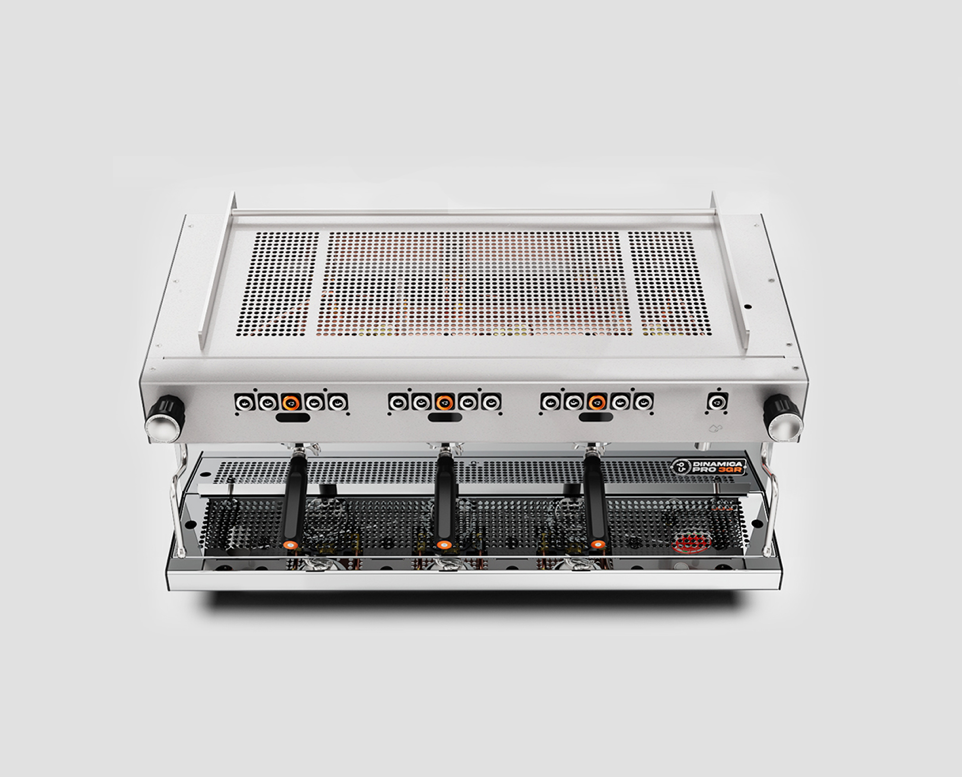

— a workshop, not a factory.

Officine Allegra combines traditional Italian manufacturing values with modern espresso technology. Every machine reflects a philosophy rooted in craftsmanship, precision, and intentional design — where form follows function, and every component exists for a reason.
Produced in small numbers, each machine is developed with patience, tested without compromise, and built to stand the test of time. We believe performance should never come at the expense of elegance.
Built for consistency, thermal stability, and long-term performance. Professional engineering made practical — without compromise.
Design is never decoration. Every line, material, interface, and proportion serves a purpose. Beauty comes from functionality.
Workflow, ergonomics, and tactile interaction shaped around the people who use the machine every day. Barista-first thinking is part of the engineering.
We do not build for volume. We build for precision. Small-batch production allows tighter quality control, greater attention to detail, and machines assembled with the mentality of a workshop rather than a factory.
Officine AllegraMilano · ItaliaOne DNA, multiple expressions. From compact single-group to flagship dual-boiler — built around different workflows, sharing one design philosophy.
versatile, refined, built with purpose.
Lume is designed around workflow, ergonomics, and tactile interaction — engineered for baristas who demand reliability and control in every extraction. The 6.5L boiler ensures steady power; the quick-opening knob and cool-touch wand provide a safe, efficient workflow. Available in automatic and semiautomatic.


the precision essential.
The single-group expression of Dinamica — advanced where it matters, intuitive where it should be. Reliability without complexity, engineered for compact specialty cafés that refuse to compromise on thermal stability or tactile control.
where engineering meets aesthetics.
The flagship of the Professional Line. Dual-boiler architecture, available as 2GR or 3GR — built for high-volume operations where consistency, thermal stability, and long-term performance are non-negotiable. Detail-driven construction, because details shape experience.

We do not build for volume. We build for precision. Small-batch production allows tighter quality control, greater attention to detail, and machines assembled with the mentality of a workshop rather than a factory.
Every machine reflects a philosophy rooted in craftsmanship, precision, and intentional design — beautifully engineered, technically reliable, built for daily professional use, and designed to age with character.
Visit the workshop →Officine Allegra is built for people who see espresso as a craft — those who want Italian craftsmanship, professional consistency, distinctive design, reliable performance, and a machine with soul.
We've built for cafés first. Now we're bringing the same Italian engineering — the same thermal stability, the same hand-assembled care — to your kitchen counter. A domestic espresso machine that thinks like a professional.